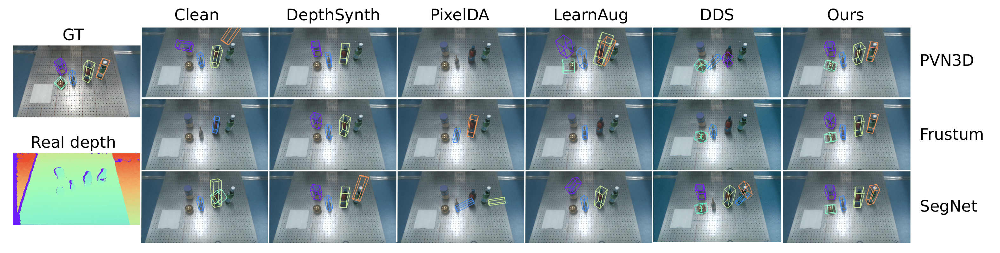

Results
RGB, infrared, and depth from RealSense D415 (left) v.s. RGB, infrared, and depth generated by our method (right). Note that our method can simulate the error pattern of the real depth sensor. We found the existence of such patterns vital to enhancing sim-to-real performance.
Qualitative comparison of 6D object pose estimation algorithms on real depth images. The scene is challenging for pose estimation as the depth measurement of real objects (Golden ball, S.Pellegrino) is noisy and incomplete. All the three pose estimation algorithms are able to infer accurate poses while trained solely on the simulated data generated by our method. Note that we use depth maps for the pose estimation and RGB images are only used for better visualization.